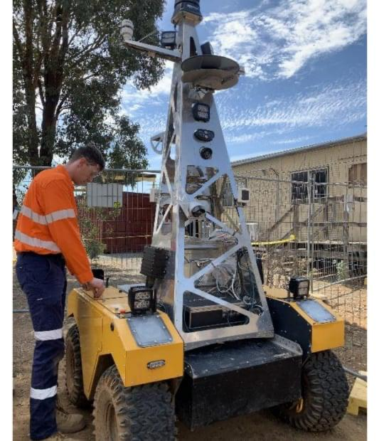
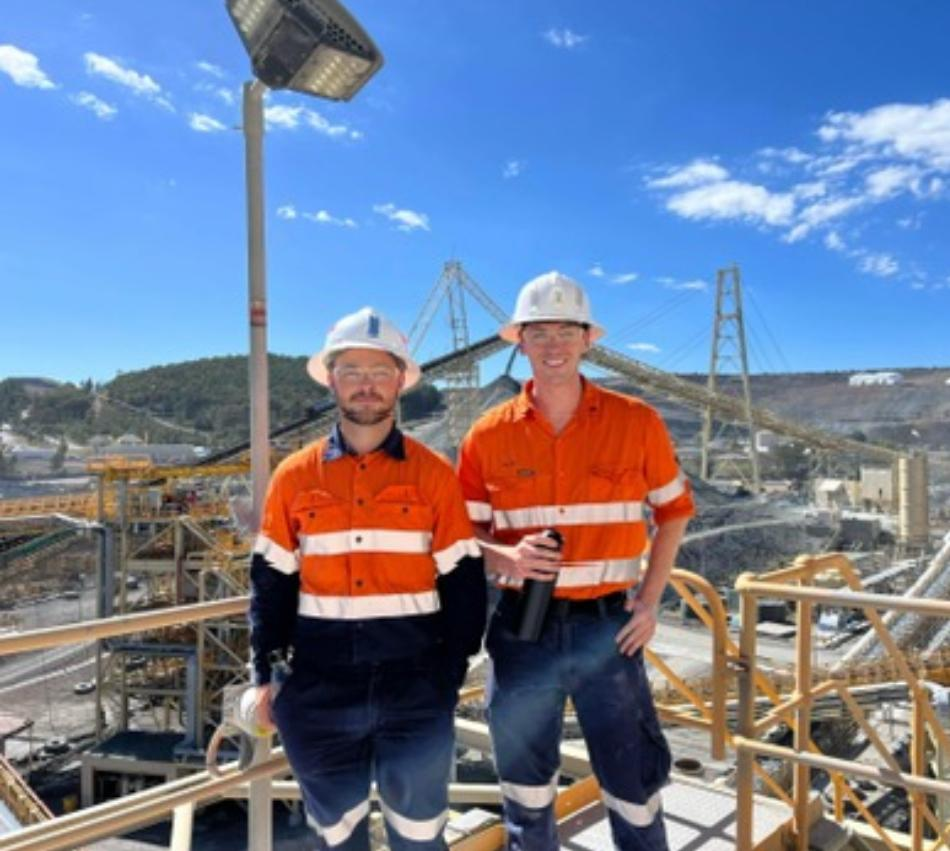
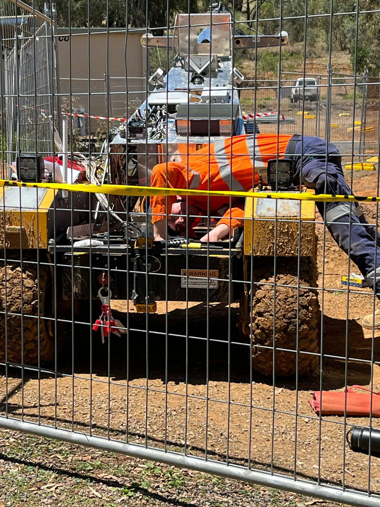

10/11/2025
Joining the Machine Innovation and Automation Department at Newmont Cadia Valley Operations was a formative professional experience in my engineering journey. Transferring from university work to the operational mining environment was a big jump that helped me to understand the concept of getting automation up and running and functioning in challenging and dangerous situations where production costs and results matter. I was joining the team at a very strategic moment as we started recommissioning the SmartHog autonomous inspection vehicle, an automated platform designed to carry out routine underground inspection work without stopping loader work or taking personnel into danger.

The completion of this required me to combine robotics, industrial networking, and heavy systems design. The SmartHog platform was a high-performing system with ROS based navigation stack and distributed control network. It leveraged LiDAR, inertial sensors, cameras, and radar, fusing data over custom algorithms to create real time three dimensional maps of underground drives. I assisted in electrical integration & refurbishment of MIL spec enclosures, circular connectors and sealed cable assemblies rated for dust, moisture, and vibration. Additionally, I helped to increase the mechanical strength of the LiDAR mounting assemblies, and to test the calibration of the mounting assemblies to ensure structural rigidity and sensor alignment.
The entire system had to withstand the high temperature, and harsh mine conditions that characterized the operating environment, it instilled within me an appreciation for robust, field ready engineering that sticks in my mind. The experience was probably even more rewarding as I worked closely to work alongside the site electricians, auto electricians, and operators too. Those tradesmen intuitively understood failure modes, grounding and wiring techniques after years of hands on field work and many of their heuristics are now principles that I use when designing and reviewing electrical systems with the same method of applying it to my own work today. They taught me the importance of the physicalities that separates a good design on paper from one that withstands in the field. Working with them transformed my approach to product design and made me know how to prioritize maintainability, accessibility and fault tolerance as much as new ideas and functionality.

This role also taught the basics of how to achieve functional safety of my product, which really shaped my engineering mindset. I came to appreciate risk hierarchies, safety integrity levels and the need for proper design for graceful degradation to avoid losses of operational integrity. Many of the things we accomplished in validation were to figure out single points of failure and confirm that the system could fail responsibly or recover on its own. This was my first real foray into the realm of safety and reliability and control theory in industrial practice, and this has shifted very much how I see aspects of hardware and software design.

Just as important was the mentoring that I had during the process. I was lucky to encounter senior and grad engineers who fostered curiosity, technical depth, and accountability and directed me through design audits, structured testing, and troubleshooting under pressure. I found Newmont to be very much a mixture of hands on, hands on trade experience and advanced engineering practice, and had as much understanding of professionalism and teamwork as I did from the technology itself. Whether mapping CAN bus networking, repositioning telemetry sensors underground, or examining hazard analysis documentation late in the workshop, I’ve learned to develop my capability as an engineer. In hindsight, the SmartHog project was the link between theory and engineering in the field that very few experiences could. I still greatly appreciate the guidance and practical experience, patience, and mentorship I was provided by the tradesmen and engineers who served within that organization while I worked there, as my impression of the way that they work sets the bar for me in my pursuits of being an engineer.